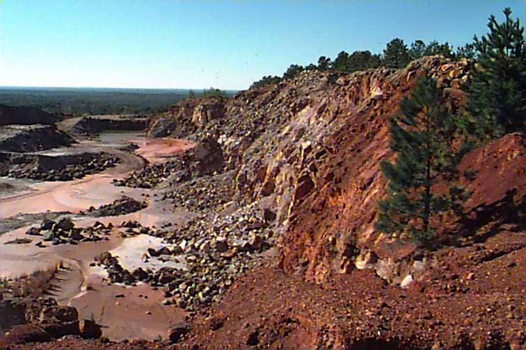
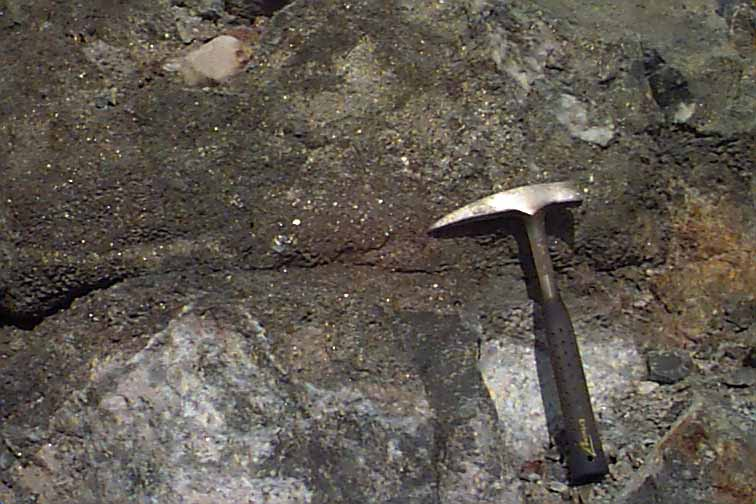
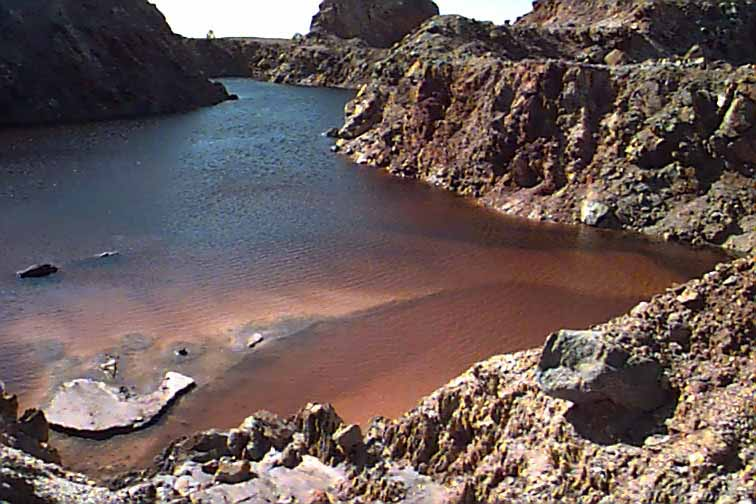
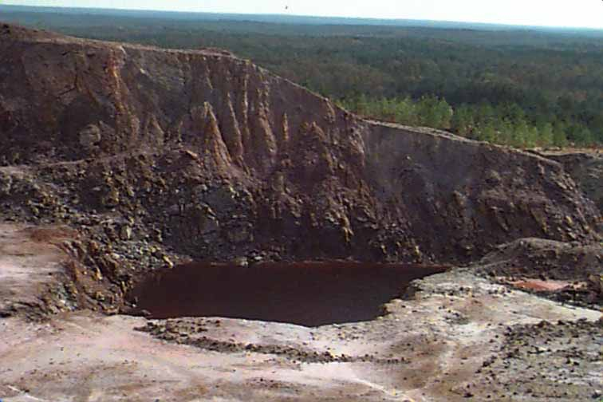
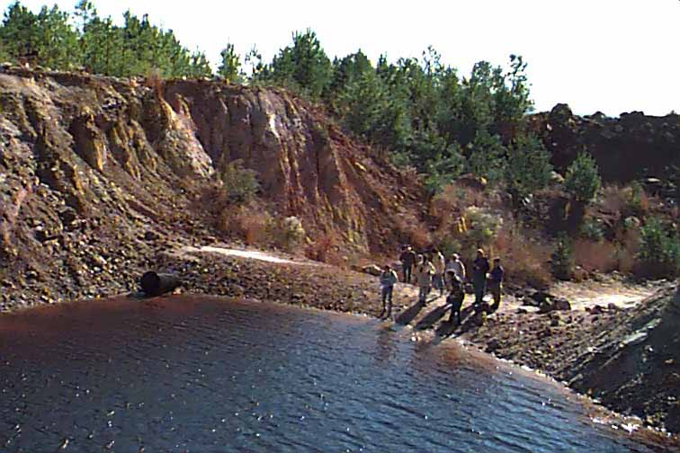

<center>
<a href="gravespitsouth.jpeg" >
</a><BR>
Graves Mt. pit view to the south
<BR>
</center> 
<center>
<a href="gravespyrite.jpeg" >
</a><BR>
Graves Mt. pyrite vein
<BR>
</center>
 <center>
<a href="gravesredpond.jpeg" >
</a><BR>
Graves Mt. red holding pond
<BR>
</center> 
<center>
<a href="gravesredpond2.jpeg" >
</a><BR>
Graves Mt. pit view to the east 
<BR>
</center> 
<center>
<a href="graveswatersample.jpeg" >
</a><BR>
Graves Mt. water sampling - pond pH = 4.5
<BR>
</center>  
